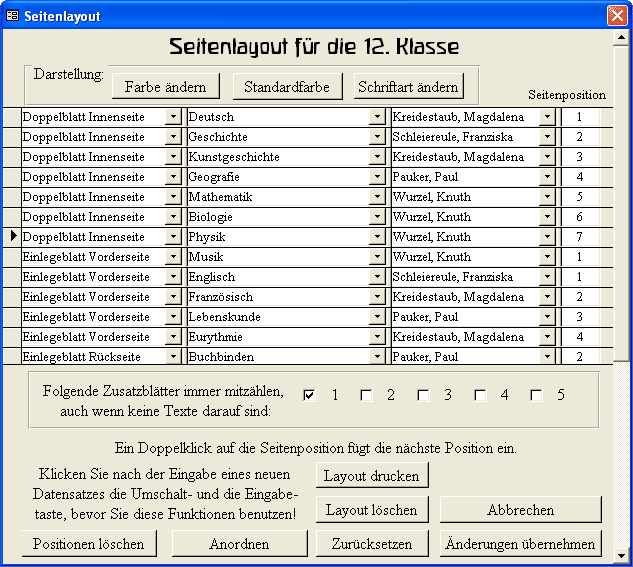

Texel-Hilfe

Einleitung
Beispiele
Überblick
Installation
Organisation
Einstellungen
Schülerdaten
Layout
Dateivorlagen
Schreiben
Einlesen
Korrigieren
Ausdrucken
Archivieren
Kontakt
Eine Zeugnisverwaltung für Waldorfschulen
Mit diesem Formular wird das Layout für die Zeugnisse festgelegt.

Das Zeugnislayout
Schriftart und Schriftfarbe
Einen Eintrag machen
Zusatzblätter
Die Fächer anordnen
Das Layout ausdrucken
Beenden des Formulars
Das Zeugnislayout
Das Layout dient zunächst dazu festzulegen, welcher Lehrer für welches Fach eine Textvorlage auf seiner Diskette bekommen soll. Beim Erzeugen der Dateivorlagen wird für jeden Layouteintrag eine Textdatei mit den Schülernamen erzeugt. Der Lehrername steht dabei oben in der Datei und kann dann noch geändert werden.
Später bem Ausdrucken der Zeugnisse bestimmt das Layout, welcher Text auf welche Seite gedruckt wird. Dabei wird nicht der Lehrername aus dem Layout benutzt, sondern der, der in der eingelesen Textdatei stand.
Passen beim Ausdrucken nicht alle Texte auf eine Seite, können dann Faächer auf eine andere oder neue Seite verschoben werden, bis das Layout zufrieden stellt.
Der Klassenlehrertext muss für die erste bis achte Klasse als Fach Klassenlehrer mit in das Layout aufgenommen werden. Der Zeugnisspruch wird nicht als Layouteintrag aufgenommen. Der Klassenlehrer bekommt automatisch eine Dateivorlage für die Zeugnissprüche. Wo der Zeugnisspruch gedruckt wird, auf das Innenblatt oder auf ein Extrablatt, kann im Druckformular festgelegt werden.
In der Datenbank kann das Layout für alle Klassen gespeichert werden. Angezeigt wird nur das Layout der eingestellten Klasse. Um das Layout einer anderen Klassenstufe zu sehen, muss die Klassennummer geändert werden.
Schriftart und Schriftfarbe
Die Standardfarbe für die Zeugnisse ist das Blau mit dem Access-Code 15797277. Eine andere Farbe für alle Zeugnisseiten wählen Sie mit der Schaltfläche Farbe ändern aus, die Standardfarbe können Sie mittels der Schaltfläche Standardfarbe auswählen.
Die eingestellte Schriftart ist TriathlonDB, auf der Vorderseite wird außerdem die Waldorfschrift benutzt. Beide Schriften werden im Downloadpaket mitgeliefert. Sie können die Schriftart für alle Zeugnisseiten mittels der Schaltfläche Schriftart ändern ändern. Die Waldorfschrift wird davon nicht berührt. Diese muss für die Titelseite des Zeugnisses auf dem Bericht rptDoppelblattAußenseite von Hand geändert werden, wenn das gewünscht ist. Im gleichen Bericht muss auch der Name der Schule von Hand eingetragen werden. Auch ein Logo, das mitgedruckt werden soll, muss hier von Hand eingebunden werden.
Einen Eintrag machen
Fachtexte können auf die Innenseite des Doppelblattes, auf die Vorder- oder Rückseite des Einlegeblattes oder auf eines von fünf möglichen Zusatzblättern gedruckt werden.
Zunächst legen sie für jedes Fach einen Eintrag an. Einen neuen Eintrag erzeugen Sie, indem Sie Eingaben in die leere Zeile ganz unten vornehmen. Zum Löschen eines Eintrags wählen sie den eintrag mittels des Anfassers am linken Rand aus und drücken Sie die Entfernen-Taste.
Wählen Sie dann die Seite, den Fachnamen und den Lehrernamen aus den Auswahllisten aus. Die Fachnamen und die Lehrernamen, die zur Auswahl angeboten werden, können Sie vom Formular Einstellungen aus anpassen. In der Tabelle mit den Lehrernamen ist auch ein Kürzel für jeden Lehrer festgelegt. Diese erschient in dem Dateinamen der Vorlagedateien dieses Lehrers, so dass diese leicht zugeordnet werden können.
Ist die Klasse in einem Fach in mehrere Gruppen geteilt, die von verschiedenen Kollegen unterrichtet werden, machen Sie mehrere Einträge mit dem gleichen Fachnamen, aber verschiedenen Lehrernamen. Die Positionen können gleich oder einfach aufeinanderfolgend sein. Jeder Kollege bekommt dann eine Dateivorlgae für dieses Fach, trägt aber nur Texte für seine Schüler ein. Später werden dann alle Dateien eingelesen und jeder Schüler bekommt seinen Text.
Entsprechend verfahren sie, wenn von zwei Kollegen jeder einen Teil des Zeugnistextes schreiben möchte. Beim Einlesen der zweiten Datei können Sie dann angeben, dass die Texte aneinandergehängt werden sollen.
Zusatzblätter
Auf der letzten Zeugnisseite ist unten immer angegeben, wie viele Zusatzblätter das Zeugnis enthält. Angegeben wird dabei immer das Einlegeblatt, das ja zu jedem Zeugnis gehört. Weitere Zusatzblätter werden für jeden Schüler individuell gezählt, da nicht immer jeder Schüler ein Zusatzblatt bekommt. Ein Eintrag im Layout reicht nicht aus, damit das Blatt gezählt wird!
Oft werden aber die Doppelseiten schon gedruckt, bevor die Texte für die Zusatzblätter eingelesen wurden, oder das Zeugnis bekommt ein Zusatzblatt, das nicht mit Texel erstellt wird. Damit diese Blätter dann in der Zählung auftauchen, können Sie hier ein Kästchen wählen. Dieses Zusatzblatt wird dann immer mitgezählt, auch wenn kein Text dafür eingelesen wurde.
Die Fächer anordnen
Sind die Fächer und Lehrer eingetragen, muss die Position der Fächer auf der Seite angegeben werden. Bleibt die Postition 0, wird das Fach beim Erstellen der Dateivorlagen und beim Ausdrucken nicht berücksichtigt.
Zum Anordnen doppelklicken sie am einfachsten jede Position in der Reihenfolge, in der sie auf der Seite erschienen sollen. Dann wird automatisch die nächste freie Position zugeordnet.
Alle Positionen einer Seite löschen sie mithilfe der Schaltfläche Postionen löschen, die Schaltfläche Anordnen zeigt die Fächer in der richtigen Ordnung an. Beide Schalter funktionieren nur richtig, wenn alle neu gemachten Einträge gespeichert wurden. Das geschieht durch Auswählen eines neuen Eintrags oder durch Drücken der Umstell- (Shift-) und Eingabe-Taste.
Das Layout ausdrucken
Damit jeder Klassenlehrer oder -betreuer prüfen kann, ob alle Fächer erfasst wurden, ob die Fächer richtig benannt wurden und die richtigen Lehrer eingetragen wurden, kann das Layout ausgedruckt und zur Prüfung verteilt werden. Das empfiehlt sich gleichzeitig mit dem Datenblatt mit den Schülerdaten zu machen. Auch Praktika und andere Projekte sollten nicht vergessen werden.
Beenden des Formulars
Die Schaltfläche Layout löschen löscht das gesamte Layout für diese Klasse.
Die Schaltfläche Zurücksetzen stellt den Zustand wieder her, wie er beim Öffnen des Dialogs vorhanden war.
Die Schaltfläche Änderungen übernehmen speichert alle Änderungen und schließt das Formular.
Die Schaltfläche Abbrechen speichert keine Änderungen und schließt das Formular.